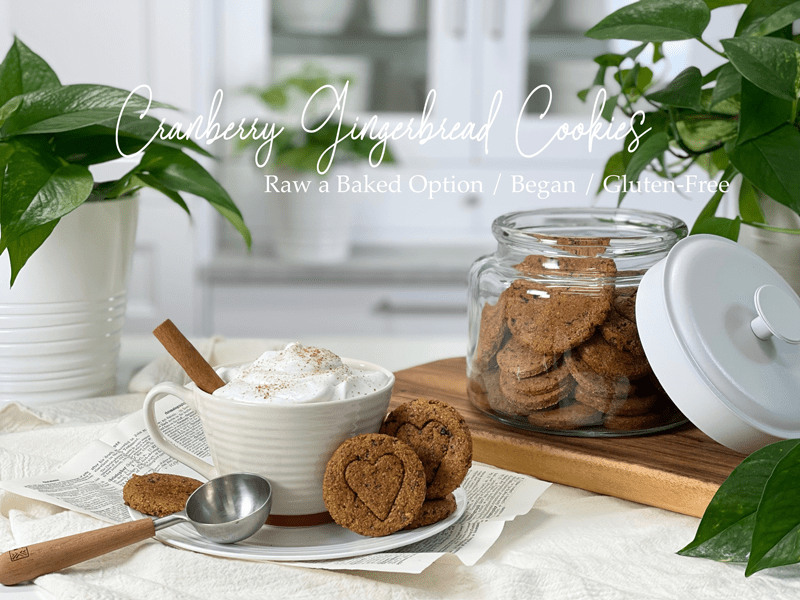
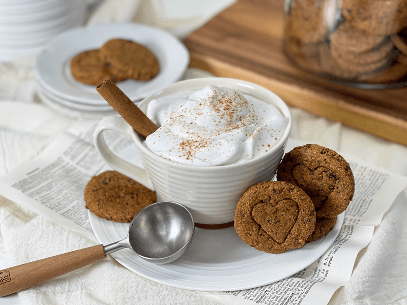

Cranberry Gingerbread Cookies | Raw & Baked Option
I thought as soon as the holidays passed that my cravings for all things gingerbread would pass, too. Boy, was I wrong. Every day I walked around in the kitchen, opening the fridge, freezer, pantry doors (multiple times), searching for “that” flavor to satisfy me. At first, I tried other foods in attempt to satiate my craving, but nothing worked UNTIL I just caved and had a bite of these cookies. Ahh, THAT’S exactly the taste I was searching for. If you can’t beat the tastebuds… join them!

How is everyone’s winter going? As fall approached, I kept reading in various places that we were going to have a WET winter, but when I tried to narrow down what they meant exactly by WET, I couldn’t find any straight answers. So, I just shrugged and decided I was just going to have to wait and see. Well, as I am writing this, now I know! We are experiencing one of the heaviest snowfalls that we have witnessed since moving here ten years ago. Overnight we got over 10 inches on top of what we already had, and we have 10+ inches still yet to come. If you wish to witness some of my snowfall adventures, check me out on Facebook. I tend to post videos and photos of my excursions. I hope everyone who reads this is doing well, and staying warm and healthy!

These cookies are filled with delicious “warming flavors” that are sure to feel like a hug in the belly. They are firm on the outside, offering a tiny crunch, yet soft and chewy on the inside. In case you might be wondering, the coffee mug is filled with my Polar Express Hot Chocolate and topped with full-fat coconut milk that I whipped up. If you are interested in viewing other hot chocolate recipes, here are few for you: Hottie Hot Chocolate, Peppermint Patty Hot Chocolate Mix, Malted Hot Chocolate, and my last one… Espresso My Love Hot Chocolate Mix.
Flour Options + Tips
- Using ALL oat flour leads to a more dense cookie that is a bit on the dry side, which is why I added in almond flour. I only mention this because you might be thinking to yourself… “Hmm, I might try ALL oat flour to reduce the fat.” I haven’t tested other flour combos, but I will say that this combo works wonderfully. If you decide to experiment with other flours, please leave a comment below and let us know the outcome.
- Oat flour: I recommend blending GF rolled oats in the blender for about 30 seconds. The goal is to break it down into tiny bits, not powder. I find that really fine oat flour makes for denser/gummier textures, especially if it is the sole flour being used.
Rolling in the Dough
- Ok, so we won’t be rolling IN the dough, but we will rolling it out. The key is to roll it in between two sheets of parchment paper. The dough is “dry” enough that it shouldn’t be sticking to it.
- If you don’t want to take the time or effort to roll it out, you can take pinch off a portion of the dough, roll it into a ball, and press it flat with your hands.
- If you do decide to roll it out, have fun using cookie cutters. I used a round cookie cutter and then just pressed a heart shaped cookie cutter slightly down into the dough to create an impression. You will want to press it about halfway down into the dough so the lines don’t close up while baking.
Well, my friends, that’s about all I have to share about these delicious cookies. I hope they inspire you to hop into the kitchen, strap on that apron, and have some fun. Please feel free to leave a comment below; it means a lot to hear from you. Blessings, amie sue
 Ingredients:
Ingredients:
Yields: (depends on size) cookies
- 2 cups (180 g) GF rolled oats, powdered
- 1 cup (120 g) fine almond flour
- 1/4 cup (45 g) coconut crystals
- 1 tsp (2 g) ground Ceylon cinnamon
- 1/4 tsp (1 g) ground cloves
- 1/4 tsp (1 g) ground ginger
- 1/2 tsp (3 g)Himalayan pink salt
- 1/4 cup (89 g) molasses
- 2 Tbsp water
- 1/2 cup (70 g) dried cranberries
- 1/4 cup (32 g) crystalized ginger pieces
Preparation:
- In the food processor fitted with the “S” blade, combine the oat flour, almond flour, coconut crystals, cinnamon, cloves, ginger, and salt. Process together, making sure all the spices are distributed.
- I recommend making your own oat flour from GF (gluten-free) rolled oats but breaking them down in the blender. Don’t process them too long. It’s okay to see tiny bits of oats–in fact, it is better.
- Store-bought oat flour is expensive, and I find it often makes recipes gummy when it is the sole flour being used.
- Add the molasses and water. Process until for about 15 seconds, then add the dried cranberries and ginger. Process until it forms a thick dough ball as it spins.
- We don’t want to process to the point that the dried cranberries get pulverized; we want to leave larger chunks in the batter for the cookies.
- Roll the dough out between two sheets of parchment paper.
- Roll the dough out around 1/4″ thick.
- Transfer the cookies to the mesh sheet that comes with the dehydrator.
- When all scraps are gathered, repeat the process.
- Dehydrate for 1 hour at 145 degrees (F), then reduce to 115 degrees (F) for 10-16 hours.
- Store in an airtight container on the counter for 1-2 weeks or freeze for up to 3 months.
Baking Option
- Preheat oven to 350 degrees (F)
- Line a baking cookie sheet with parchment paper.
- Roll the dough out between two sheets of parchment paper.
- Roll the dough out around 1/4″ thick.
- Transfer the cookies to the mesh sheet that comes with the dehydrator.
- When all scraps are gathered, repeat the process.
- Feel free to place the cookies fairly close together on the cookie sheet, as they don’t spread.
- Bake on the middle rack for 13 minutes.
- Start checking the bottom of the cookies around 10 minutes, since many ovens give or take a few degrees. Timing also depends on thick or thin you rolled the cookies.
- Once done baking, transfer the cookies from the pan to a cooling rack.
Culinary Explanations:
- Why do I start the dehydrator at 145 degrees (F)? Click (here) to learn the reason behind this.
- When working with fresh ingredients, it is essential to taste test as you build a recipe. Learn why (here).
- Don’t own a dehydrator? Learn how to use your oven (here). I do, however, honestly believe that it is a worthwhile investment. Click (here) to learn what I use.
© AmieSue.com